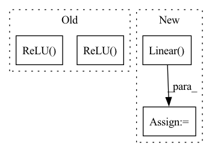

Pattern ID :6430

Before Change
down_layers = [nn.ReflectionPad2d(3),
nn.Conv2d(in_channels, 64, kernel_size=7, stride=1, padding=0, bias=False),
nn.InstanceNorm2d(64),
nn.ReLU(inplace=True)]
// Downsampling
down_layers += [nn.ReflectionPad2d(1),
nn.Conv2d(64, 128, 3, stride=2, padding=0, bias=False),
nn.InstanceNorm2d(128),
nn.ReLU(inplace=True),
nn.ReflectionPad2d(1),
nn.Conv2d(128, 256, 3, stride=2, padding=0, bias=False),
nn.InstanceNorm2d(256),
nn.ReLU(inplace=True)]
// Down sampling residual blocks
for _ in range(4):
After Change
// Gamma, Beta block
if self.light:
fc = [nn.Linear(256, 256, bias=False),
nn.ReLU(inplace=True),
nn.Linear(256, 256, bias=False),
nn.ReLU(inplace=True)]
else:
fc = [nn.Linear(image_size * image_size * 16, 256, bias=False),
In pattern: SUPERPATTERN
Frequency: 3
Non-data size: 4
Instances
Fragment ID: 22336404
Project Name: lornatang/ugatit-pytorch
Commit Name: 29402d1cfc1f9bbb66eed660fd84b48adcbdc188
Time: 2020-05-19
Author: liuchangyu1111@gmail.com
File Name: ugatit_pytorch/model.py
M Class Name: Generator
N Class Name: Generator
M Method Name: __init__(3)
N Method Name: __init__(3)
M Parent Class: nn.Module
N Parent Class: nn.Module
M File Name: ugatit_pytorch/model.py
N File Name: ugatit_pytorch/model.py
M Start Line: 25
M End Line: 54
N Start Line: 100
N End Line: 142
'>
Before Change
nn.Conv1d(in_channels=in_channels, out_channels=out_channels,
kernel_size=kernel_size, stride=1, padding=1),
nn.BatchNorm1d(out_channels),
nn.ReLU())
// Convolution 3x3 kernel Layer 2 (32@7500 -> 32@7500)
self.conv_layer2 = torch.nn.Sequential(
torch.nn.Conv1d(in_channels=out_channels, out_channels=out_channels,
kernel_size=kernel_size, stride=1, padding=1),
nn.BatchNorm1d(out_channels),
nn.ReLU())
self.conv_layer3 = torch.nn.Sequential(
torch.nn.Conv1d(in_channels=out_channels, out_channels=1,
kernel_size=kernel_size, stride=1, padding=1),
nn.BatchNorm1d(1),
nn.ReLU())
// Dropout
self.a_dropout = torch.nn.Dropout1d(p=0.5)
After Change
self.avg_pool1 = torch.nn.AvgPool1d(kernel_size=2, stride=2)
self.dense1 = torch.nn.Linear(900, 1000)
self.dense2 = torch.nn.Linear(1000, 1800)
self.sigmoid = torch.nn.Sigmoid()
def forward(self, ple_input):
// print("shape of ple_input :", ple_input.shape)
'>
Fragment ID: 22336406
Project Name: tvs-ai/pytorch_rppgs
Commit Name: 23c2748e8dcc9d265b409a89732ca9b82cb9149a
Time: 2022-08-28
Author: forownsake@gmail.com
File Name: nets/modules/sub_modules/bvp2abp.py
M Class Name: bvp2abp
N Class Name: bvp2abp
M Method Name: __init__(4)
N Method Name: __init__(4)
M Parent Class: nn.Module
N Parent Class: nn.Module
M File Name: nets/modules/sub_modules/bvp2abp.py
N File Name: nets/modules/sub_modules/bvp2abp.py
M Start Line: 21
M End Line: 34
N Start Line: 16
N End Line: 48
'>
Before Change
down_layers = [nn.ReflectionPad2d(3),
nn.Conv2d(in_channels, 64, kernel_size=7, stride=1, padding=0, bias=False),
nn.InstanceNorm2d(64),
nn.ReLU(inplace=True)]
// Downsampling
down_layers += [nn.ReflectionPad2d(1),
nn.Conv2d(64, 128, 3, stride=2, padding=0, bias=False),
nn.InstanceNorm2d(128),
nn.ReLU(inplace=True),
nn.ReflectionPad2d(1),
nn.Conv2d(128, 256, 3, stride=2, padding=0, bias=False),
nn.InstanceNorm2d(256),
nn.ReLU(inplace=True)]
// Down sampling residual blocks
for _ in range(4):
After Change
// Gamma, Beta block
if self.light:
fc = [nn.Linear(256, 256, bias=False),
nn.ReLU(inplace=True),
nn.Linear(256, 256, bias=False),
nn.ReLU(inplace=True)]
'>
Fragment ID: 22336401
Project Name: lornatang/ugatit-pytorch
Commit Name: 29402d1cfc1f9bbb66eed660fd84b48adcbdc188
Time: 2020-05-19
Author: liuchangyu1111@gmail.com
File Name: ugatit_pytorch/model.py
M Class Name: Generator
N Class Name: Generator
M Method Name: __init__(3)
N Method Name: __init__(3)
M Parent Class: nn.Module
N Parent Class: nn.Module
M File Name: ugatit_pytorch/model.py
N File Name: ugatit_pytorch/model.py
M Start Line: 25
M End Line: 54
N Start Line: 100
N End Line: 142
'>
Before Change
self.conv1 = nn.Sequential(
nn.Conv(3, 32, 3, 2, 1, bias=False),
nn.BatchNorm(32),
nn.ReLU(),
nn.Conv(32, 32, 3, 1, 1, bias=False),
nn.BatchNorm(32),
nn.ReLU(),
nn.Conv(32, 64, 3, 1, 1, bias=False)
)
self.bn1 = nn.BatchNorm(64)
After Change
self.layer3 = self._make_layer(block, 256, layers[2], stride=2)
self.layer4 = self._make_layer(block, 512, layers[3], stride=2)
self.avgpool = nn.AdaptiveAvgPool2d(1)
self.fc = nn.Linear(512 * block.expansion, num_classes)
for m in self.modules():
if isinstance(m, nn.Conv2d):
nn.init.kaiming_normal_(m.weight, mode="fan_out", nonlinearity="relu")
'>
Fragment ID: 22336379
Project Name: jittor/jittor
Commit Name: c7b78f570e490793fee8e15b3bfcbec08683cdfe
Time: 2021-04-03
Author: randonlang@gmail.com
File Name: python/jittor/models/res2net.py
M Class Name: Res2Net
N Class Name: Res2Net
M Method Name: __init__(6)
N Method Name: __init__(6)
M Parent Class: nn.Module
N Parent Class: Module
M File Name: python/jittor/models/res2net.py
N File Name: python/jittor/models/res2net.py
M Start Line: 87
M End Line: 111
N Start Line: 99
N End Line: 123